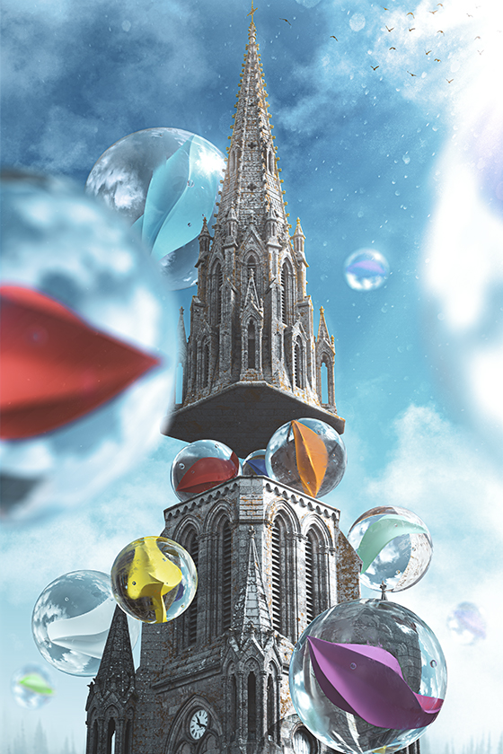
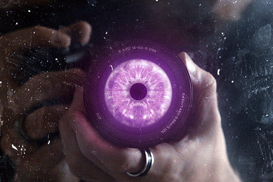

À PROPOS
Mon aventure audiovisuelle a débuté en 2016, sur YouTube alors que je ne découvrais que les
logiciels de montage photo et vidéo sur mobile, en réalisant de multiples vidéos couvrant
différents
sujets, plusieurs formats, et enfin plusieurs formats.
Chaque projets personnels ont été l’occasion d’expérimenter, d’affiner mon regard et de
perfectionner ma maîtrise des logiciels.
Au fil des années, j’ai évolué sur divers logiciels spécialisés notamment actuellement sur les
logiciels de la suite Adobe, développant une approche technique au service de la
créativité.
Aujourd’hui, je concrétise cette passion au sein du BUT MMI (Métiers du Multimédia et de
l’Internet)
à l'IUT de Lannion,
une formation me permettant d’explorer et de maîtriser différents domaines : captation et
montage
vidéo, motion design,
graphisme et communication digitale.
AUDIOVISUEL
- Captation Image et Son
- Compositing
- Étalonnage
- Mixage
- Montage Vidéo/VFX
- Motion Design
Logiciels Maîtrisés


CONCEPTION GRAPHIQUE
- 3D
- Correction Colorimétrique
- Illustration
- Matte Painting
- Mise en Page
- Photographie
Logiciels Maîtrisés


PROJETS

Île de Ré
Contexte
Lors d'un séjour sur l’Île de Ré, j’ai eu l’opportunité grâce à l'aquisition de matériel professionnel, de capturer une série de clichés mettant en valeur l’architecture locale de cette région.
Compétences mobilisées/développées
Grâce à cette expérience photographique sur l’Île de Ré, j’ai pu affiner plusieurs
compétences essentielles. J’ai amélioré ma maîtrise technique en réglant manuellement
mon appareil pour m’adapter aux conditions lumineuses et en appliquant des techniques de
composition précises. Mon approche artistique s’est enrichie par le choix de sujets
originaux et l’expérimentation avec la lumière et les textures.
Enfin, j'ai
affiné mes compétences en
post-traitement, ce qui m’a permis d’exploiter pleinement mes photos grâce à des
ajustements
précis et une optimisation adaptée aux différents supports.
Logiciel(s) Utilisé(s)


Main Céleste
Contexte
Réalisation d'une illustration abstraite et surréaliste en autonomie à partir d'un cliché de ma propre main.
Compétences mobilisées/développées
Détourage d'un ou plusieurs sujets.
Création de plusieurs éléments fictifs en 3D.
Correction colorimétrique des éléments dans le but d'obtenir une ambiance générale
cohérente.
Réalisation d'une composition logique à partir de plusieurs éléments en matte painting,
prenant en compte les sources de lumière et leur comportement sur un ou plusieurs
sujets.
Logiciel(s) Utilisé(s)


Illustrations Gendarmerie
Contexte
Dans le cadre de mon apprentissage en alternance avec le Groupement de Gendarmerie
Départemental des Côtes-d'Armor, j'ai été chargé de valoriser l'action et l'image du
groupement de gendarmerie des Côtes-d'Armor sur les réseaux sociaux animés par le
groupement.
Cela inclue la diffusion de message de prévention lors d'évènements
comme Halloween ou Noël, où m'ont été demandé la réalisation d'illustrations en rapport
avec les dites journées. Pour cela plusieurs méthodes sont engagées, allant par
l'utilisation de clichés mettant en scène un ou plusieurs militaires, que j'aurais
moi-même pris afin de faire du "Matte Painting".
L'utilisation de l'Intelligence
Artificielle s'est avérée efficace dans certains cas où les délais sont restraints, ou
qu'il n'y a pas la possibilité de créer l'image à la main.
Compétences mobilisées/développées
J'ai appris à créer des supports de communication sous forme d'illustrations à partir d'un cahier des charges donné ou non.
Logiciel(s) Utilisé(s)


Identité Visuelle
Contexte
Réalisations de multiples animations/créations utilisant comme base mon logo composé composé de mes initiales.
Compétences mobilisées/développées
Réalisation d'effets spéciaux, animations, motion design, utilisation de caméra 3D, à partir de mes connaissances ou de tutoriels que j'ai adapté pour produire plusieurs créations.
Logiciel(s) Utilisé(s)

24h pour servir
Contexte
Dans le cadre de mon apprentissage en alternance avec le Groupement de Gendarmerie
Départemental des Côtes-d'Armor, j'ai été chargé de valoriser l'action et l'image du
groupement de gendarmerie des Côtes-d'Armor à l'occasion de la cérémonie de la
Sainte-Geneviève, ainsi que sur les réseaux sociaux animés par le
groupement.
Après avoir proposé un scénario dynamique, constitué un storyboard à
partir de plusieurs séquences de tournage, et réalisé le montage dans un délais
contraint. J'ai produit le court métrage intitulé "24h pour servir", mettant en lumière
la diversité des missions et des moyens de la gendarmerie des Côtes-d'Armor.
Compétences mobilisées/développées
J'ai appris à créer un court métrage permettant de mettre en avant une action ou un message en fonction d'un cahier des charges données, j'ai appris à organiser des tournages avec figurants (militaires) et enfin à améliorer mes compétences dans l'utilisation de matériel professionnel (caméra etc...).
Logiciels Utilisés

Paysage flottant
Contexte
Réalisation d'une illustration abstraite et surréaliste en autonomie à partir d'un cliché de la basilique du château de Quintin.
Compétences mobilisées/développées
Détourage d'un ou plusieurs sujets.
Création de plusieurs éléments fictifs en 3D.
Correction colorimétrique des éléments dans le but d'obtenir une ambiance générale
cohérente.
Réalisation d'une composition logique à partir de plusieurs éléments en matte painting,
prenant en compte les sources de lumière et leur comportement sur un ou plusieurs
sujets.
Logiciel(s) Utilisé(s)

×
L'Œil du Photographe
Contexte
Réalisation d'une illustration abstraite en autonomie à partir d'un cliché de ma propre caméra dans un miroir
Compétences mobilisées/développées
Détourage d'un ou plusieurs sujets.
Correction colorimétrique des éléments dans le but d'obtenir une ambiance générale
cohérente.
Ajout d'éléments pour ajouter du "réalisme" à la composition.
Réalisation d'une composition logique à partir de plusieurs éléments en matte painting,
prenant en compte les sources de lumière et leur comportement sur un ou plusieurs
sujets.
Logiciel(s) Utilisé(s)


Vidéos Gendarmerie
Contexte
Dans le cadre de mon apprentissage au sein du Groupement de Gendarmerie Départementale des Côtes-d'Armor, et chargé de communication sur les réseaux sociaux, j'ai été amené à réaliser plusieurs types de vidéos, telles que des découvertes d'unités de l'ombre, ou lors d'évènement comme la Journée internationale des droits des femmes avec un reportage photo.
Compétences mobilisées/développées
J'ai appris à créer des effets spéciaux tels que des "glitch", et à créer des animations textuelles en guise d'overlay afin de transmettre une ou plusieurs informations
Logiciel(s) Utilisé(s)

Introduction à VUSU
Contexte
Réalisation d'une vidéo type teaser ou bande annonce en autonomie à l'occasion du démarrage de mon activité sur YouTube.
Compétences mobilisées/développées
Réalisation de plusieurs animations en motion design.
Réalisation d'une voix off
et de mixage sonore.
Logiciel(s) Utilisé(s)

PUB IUT MMI Lannion
Contexte
Dans le cadre de notre cursus universitaire, un projet de production en petit groupe d'une vidéo ayant pour but de promouvoir la formation du BUT MMI nous a été imposé.
Compétences mobilisées/développées
J'ai appris à créer un film typographique à partir d'une musique libre de droit sur After Effect.
Logiciel(s) Utilisé(s)
CONTACT